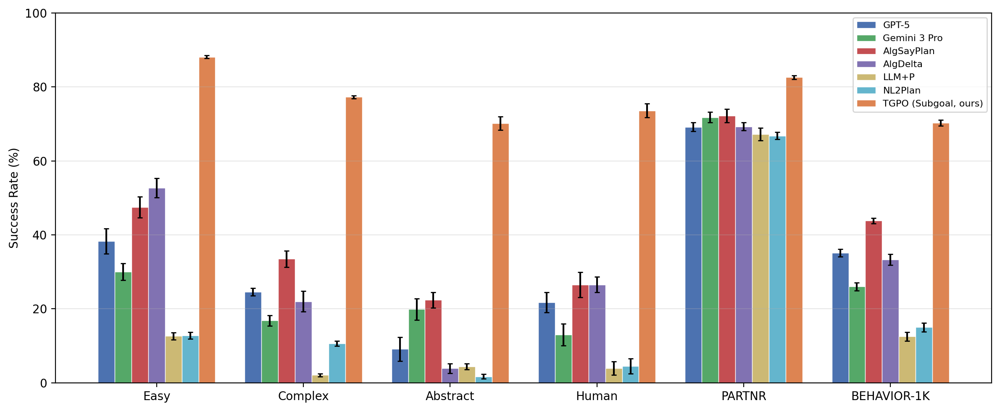
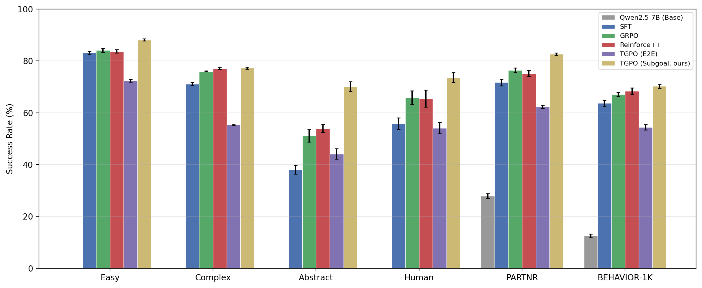

Learning-based formulation
🎯 Verifiable Subgoal Generation
We cast long-horizon planning as learning a policy that generates verifiable subgoals, moving beyond prompting-based decomposition to enable structured reasoning with symbolic planners.
We demonstrate the robust performance of TGPO in seamlessly integrating task planning with execution. The accompanying video showcases the task "Preparing popcorn for a radio evening" within the BEHAVIOR-1K simulator.
Explore AHAT's planning outputs by selecting different scenes and instructions.
Select a scene graph to view the building hierarchy.
Select a scene graph and instruction to see the output.
Plan steps will appear here.
Select an instruction to see the complete planning and execution with video demonstration.
Select an instruction to see the output.
Plan steps will appear here.
Video will appear here.
Robot task planning in real-world environments requires mapping abstract natural language instructions to executable action sequences under long horizons and complex constraints. While large language models (LLMs) provide strong commonsense reasoning, they often fail to generate reliable and feasible plans. In contrast, symbolic planners ensure feasibility and optimality but require well-specified goals and cannot directly interpret high-level human intent. We formulate robot task planning as learning to generate \emph{verifiable subgoals} in the Planning Domain Definition Language (PDDL), bridging language understanding and symbolic planning. To address the challenges of sparse and noisy supervision, we propose Trace-Guided Policy Optimization (TGPO), a reinforcement learning framework that improves structured subgoal generation through (i) verifier-grounded rewards, (ii) external correction of intermediate reasoning traces, and (iii) constrained policy updates that incorporate corrected traces into training. We evaluate TGPO on large-scale household planning tasks with long horizons, abstract instructions, and complex constraints. TGPO significantly outperforms prompting-based and reinforcement learning baselines, with the largest gains on abstract tasks. Furthermore, TGPO integrates naturally with symbolic planners and language-conditioned executors, enabling robust long-horizon planning and combinatorial generalization in realistic environments.
Learning-based formulation
We cast long-horizon planning as learning a policy that generates verifiable subgoals, moving beyond prompting-based decomposition to enable structured reasoning with symbolic planners.
Algorithmic innovation
We propose TGPO, a reinforcement learning algorithm that leverages external trace correction to improve structured generation under sparse and noisy rewards.
Robustness & scalability
TGPO enables robust planning in large-scale environments with long horizons and abstract instructions, significantly outperforming existing methods across multiple benchmarks.
Data scale
We construct a 67.1K-sample dataset of ambiguous human instructions in large scenes to support robust long-horizon trainning.


We systematically evaluate scalability across four dimensions: environment size, plan length, instruction abstraction, and task constraint complexity. As each dimension increases, we observe that AHAT maintains relatively stable performance, with only marginal degradation. In contrast, baseline methods exhibit significant performance drops as scalability increases. These results demonstrate AHAT’s robustness and effectiveness in handling large-scale environments, long-horizon planning, highly abstract instructions, and complex constraints.